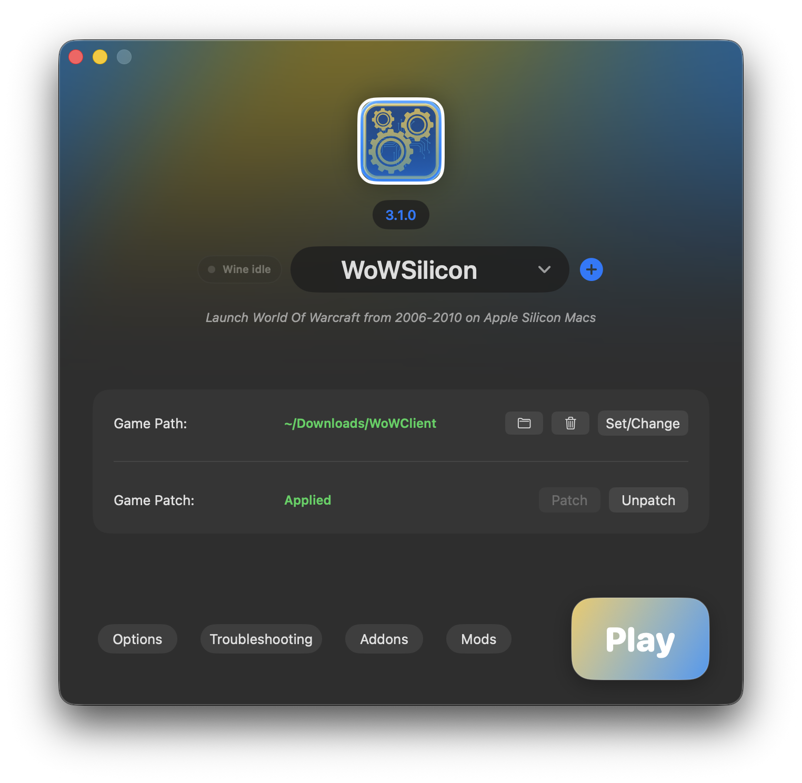

Version Profiles
Built-in profiles for VanillaSilicon 1.12.1, BurningSilicon 2.4.3, and WrathSilicon 3.3.5a, with custom profiles for any server variants.
A focused macOS launcher for World of Warcraft from 2006-2010 on Apple Silicon Macs.
WoWSilicon wires together CrossOver, RosettaX87, DX9 translation, and libSiliconPatch so older WoW clients can run on macOS.
Say goodbye to dedicating a full Windows VM just to play old WoW. Run directly on macOS, save storage space, and avoid the extra virtualization layer that can hold performance back.
Loading latest version...

Supported
Vanilla, TBC, WotLK
Runtime
RosettaX87 + DX9
Optimization
libSiliconPatch
Management
Addons + Mods
The launcher is meant to make the fragile parts of older Windows WoW clients repeatable: choose a profile, patch CrossOver, patch the game folder, adjust options, and launch.
Built-in profiles for VanillaSilicon 1.12.1, BurningSilicon 2.4.3, and WrathSilicon 3.3.5a, with custom profiles for any server variants.
Creates a patched wineloader path and adjusts CrossOver runtime files needed by the RosettaX87 launch flow.
Installs winerosetta, d3d9, libDllLdr, RosettaX87 files, and optional libSiliconPatch into the selected client folder.
Install addons from Git URLs, update individual addons, update all, bulk import/export addon lists, and filter Git-managed addons.
Enable, disable, refresh, and remove DLL-style mods while keeping required runtime pieces protected.
Configure graphics, cursor size, Retina mode, Option-as-Alt, realmlist, custom environment variables, terminal launch mode, and Metal HUD.
Classic WoW clients rely on old x86 behavior, including x87 floating-point instructions. On Apple Silicon, Rosetta 2 handles a lot well, but x87-heavy paths can be expensive compared with SSE-oriented code paths.
WoWSilicon includes the libSiliconPatch work to hook into the game at runtime and reduce x87 instruction usage where possible. In practical terms, it steers hot code toward SSE-friendly behavior, which Rosetta 2 tends to translate more efficiently.
Replaces functions that use x87 and recompiles them to use SSE, which results in better performance on Apple Silicon.
Hooks Rosetta 2 directly and emits ARM instructions to accelerate x87 globally.
WoWSilicon stages d3d9 and starts the game with DXVK/MoltenVK-related environment settings, including optional Metal HUD output for troubleshooting FPS.
Download the latest release from GitHub, move it to Applications, then follow the setup guide below.
Loading...
If macOS blocks the first launch for an unsigned build, remove the quarantine flag after moving the app to Applications.
These steps mirror the old TurtleSilicon setup flow, updated for WoWSilicon and the current patch stack.
After downloading, open the WoWSilicon DMG or ZIP from your Downloads folder. If it is a DMG, it will mount in Finder.
Drag WoWSilicon.app into /Applications.
You can open Applications from Finder, or press
Cmd+Space, type /Applications, and
open the folder.
Unsigned builds may be blocked by Gatekeeper. If macOS refuses to open the app, run this in Terminal after moving it to Applications:
xattr -cr /Applications/WoWSilicon.app
Open CrossOver from Applications once, allow macOS to open it, then quit it.
This lets CrossOver initialize its internal files before WoWSilicon patches the wineloader path.
Open WoWSilicon from Applications. If you used TurtleSilicon before, WoWSilicon can migrate existing settings when it detects the old support folder.
When macOS asks for file access, allow it. WoWSilicon needs access to the CrossOver app bundle and the game folder you select.
It only touches the paths you choose so it can copy runtime DLLs, write config files, and apply or remove patches.
When you click Patch CrossOver, macOS may request App Management permission.
If the prompt does not appear, open System Settings > Privacy & Security > App Management and enable WoWSilicon manually.
If setup fails, include your selected WoW version, CrossOver version, macOS version, and the exact step that failed when opening an issue.
The troubleshooting view inside WoWSilicon can also collect useful context before you report a problem.
WoWSilicon is not advocating the use of any private server. The launcher is intended to help older World of Warcraft clients run on Apple Silicon hardware in an efficient and performant way. Users are responsible for how they use the software, and WoWSilicon is not liable for that use.